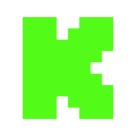
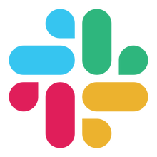
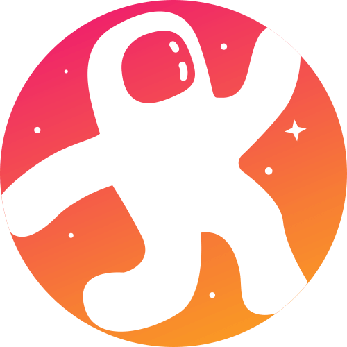
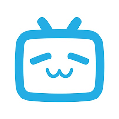
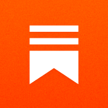

Copresentador de voz con IA
Comparte tu micrófono y los mensajes de chat que elijas con la misma sesión del copresentador y transmite sus respuestas de voz.
Reúne los mensajes de YouTube, Twitch, TikTok, Facebook, Kick y otras plataformas en un solo panel. Muéstralos, léelos en voz alta, reenvíalos, modéralos o respóndelos con IA.
Conecta Facebook, YouTube, Twitch, Zoom, Instagram, TikTok y otras plataformas desde un solo panel.
Muestra mensajes seleccionados en tu directo con temas y animaciones personalizables.
Automatiza las respuestas y crea comandos personalizados con complementos programables.
Usa IA local o en la nube para tener un copresentador de voz, responder al chat, moderar, traducir, resumir y mucho más.
Convierte los mensajes del chat en voz con servicios de texto a voz gratuitos y de pago.
Envía mensajes automáticamente de una plataforma a otras con el chat entre plataformas.
Minijuego de batalla campal y herramientas de participación para entretener a tu chat.
Crea encuestas y votaciones interactivas y organiza sorteos, todo con temas personalizables.
Habla con un copresentador de voz, usa un bot de chat independiente o captura una conversación de ChatGPT en el navegador como otra fuente. Cada modo es opcional.
Conecta con tu audiencia en todas tus plataformas favoritas












¡Más de 100 plataformas compatibles!
Ver la lista completa →Recibe ayuda inmediata de nuestra comunidad y del desarrollador
«Social Stream Ninja cambió por completo mi forma de interactuar con mi audiencia. Poder ver y responder comentarios de varias plataformas en un solo lugar ha hecho que mis directos sean mucho más participativos.»
«Desde que redescubrí SSN, se me ha abierto un mundo de posibilidades gracias a sus enormes opciones de personalización y su conexión con tantas plataformas. Steve y su equipo están haciendo algo realmente increíble 👍»

«Social Stream nos permitió empezar a transmitir en varias plataformas sin el quebradero de cabeza de tener la comunidad dividida. Combina fácilmente los chats de cada plataforma en una sola interfaz, sencilla de gestionar y personalizar. Poder destacar mensajes y donantes en pantalla mejora mucho la producción y la participación de los espectadores. Que Social Stream sea totalmente gratuito y tenga un soporte tan bueno lo ha convertido en una herramienta indispensable para nosotros.»

«La superposición de mensajes destacados marca la diferencia. A mis espectadores les encanta ver sus comentarios destacados en pantalla, y las opciones de personalización me permiten adaptarla perfectamente al estilo de mi directo.»
«Nunca pensé que podría gestionar el chat de 5 plataformas diferentes sin volverme loco. Social Stream Ninja lo hace posible y es completamente gratis. ¡Una herramienta increíble!»
Obtén la aplicación o la extensión, conecta tus fuentes y añade tu superposición.